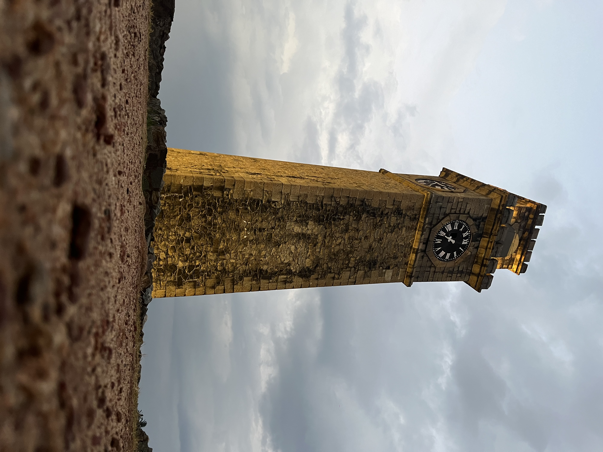
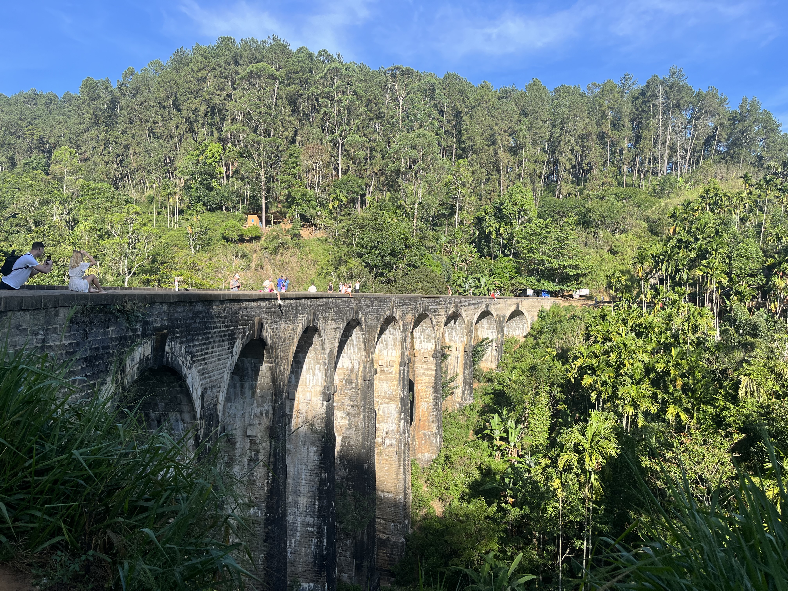
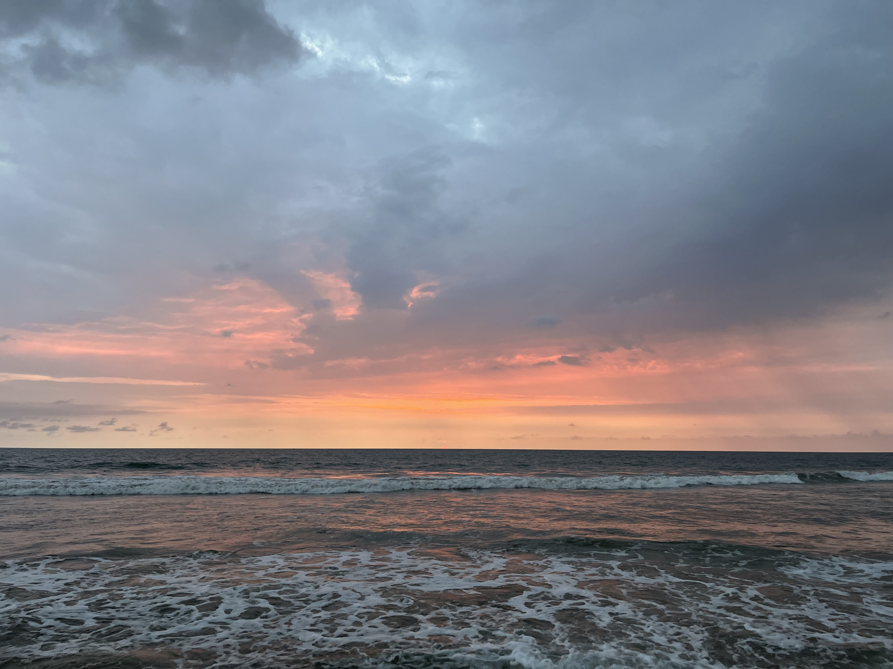
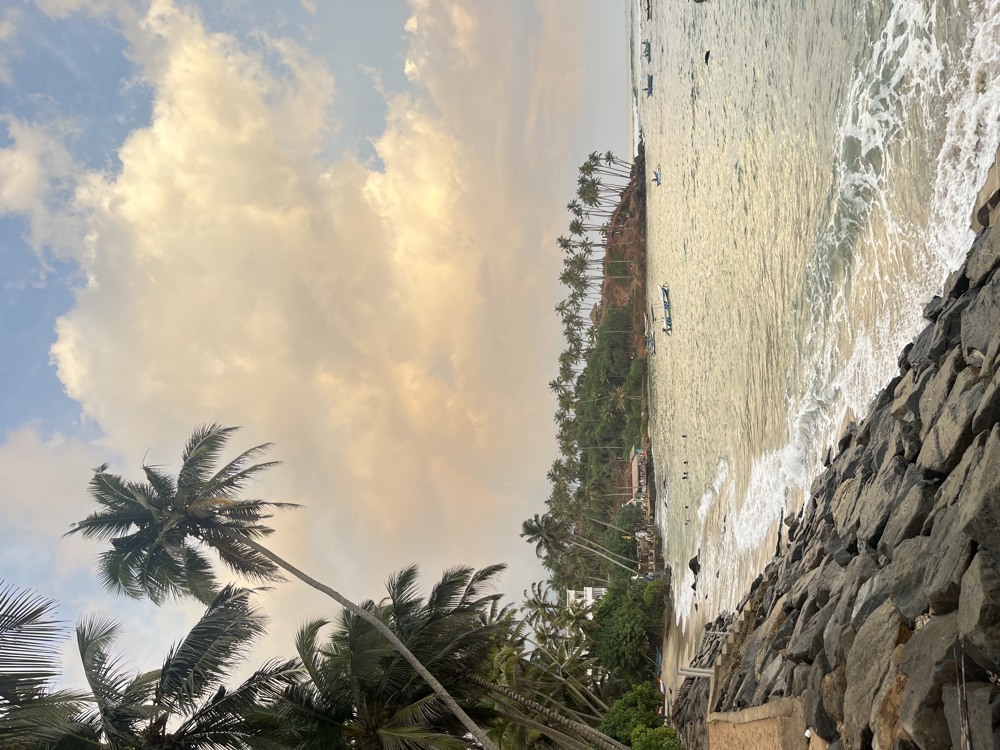
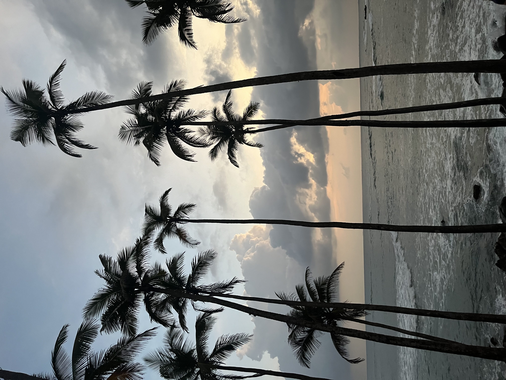
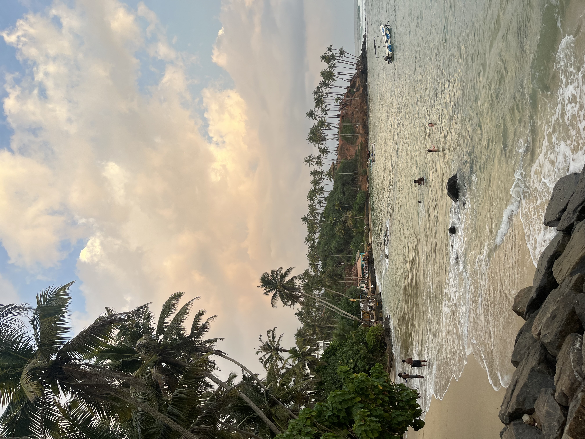
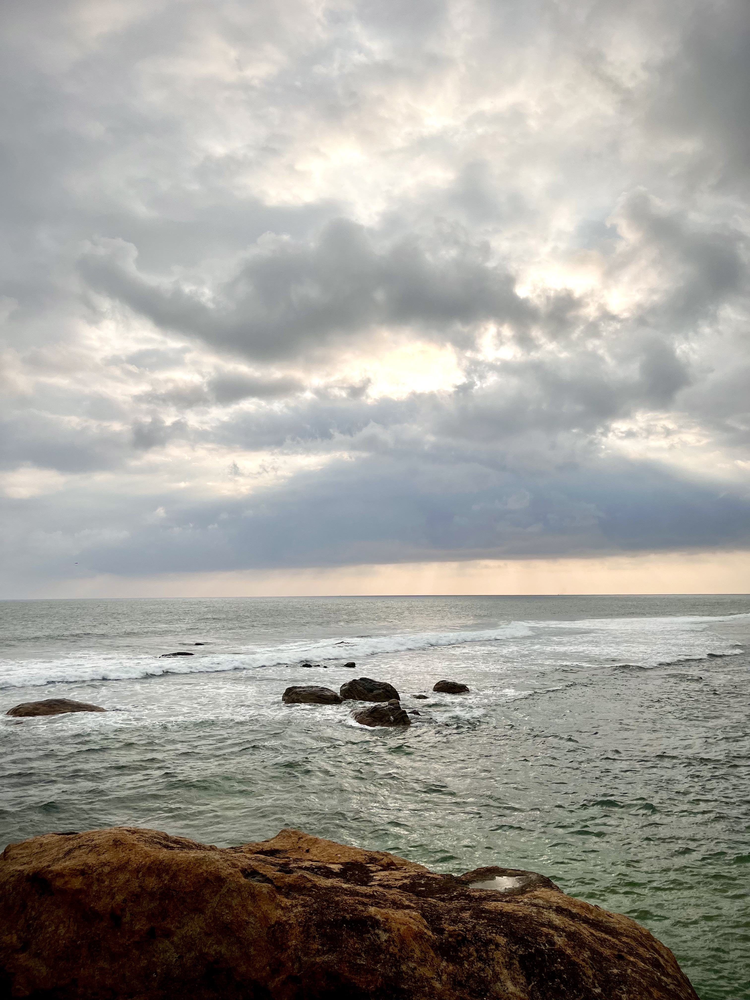
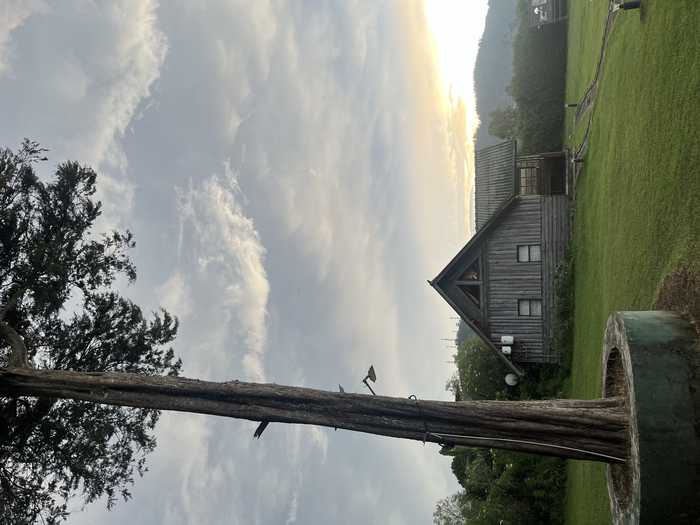
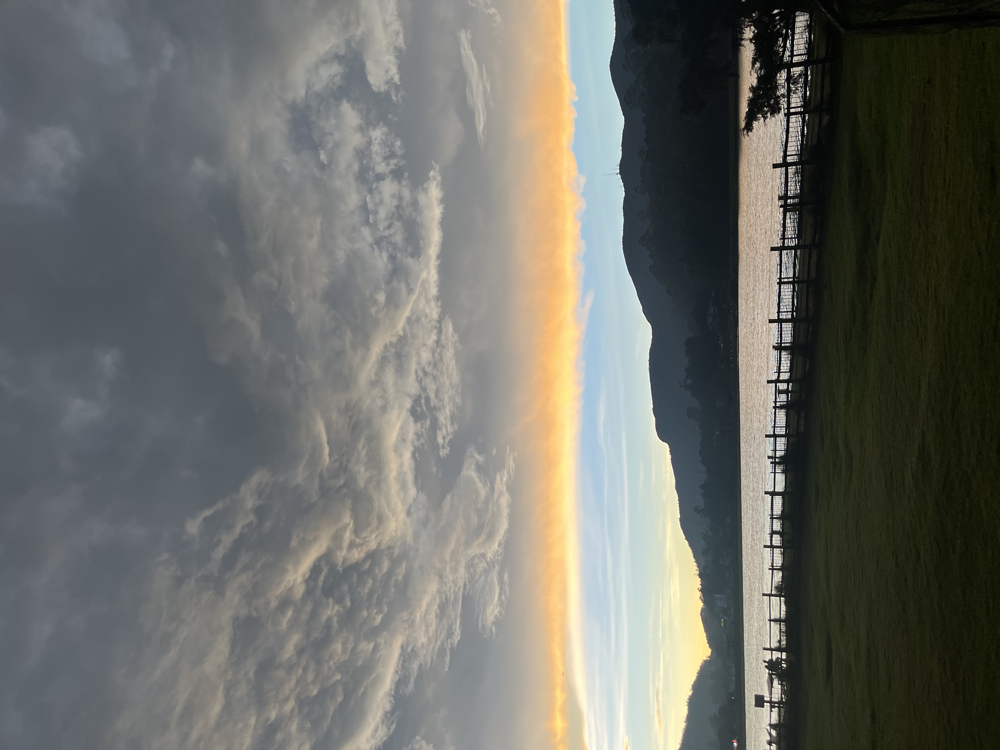
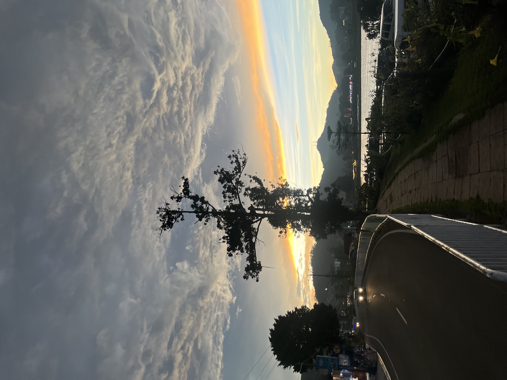

🇴🇲
Oman Diaries
7 days of desert dune-bashing, canyon swims and mountain sunsets on a self-driven road trip.
Read the Diary →Eight days, one round-the-island loop — beaches, mangroves, whales, tea hills, temples and a whole lot of tuk-tuks.
Colombo → Bentota → Galle → Unawatuna → Mirissa → Ella → Nuwara Eliya → Kandy
Trains, local buses & tuk-tuks — cheap and half the fun
Sri Lankan Rupee (LKR)
Dec–Mar for the south & hill country
Every stop, every cost, exactly how it happened.

Galle Fort's iconic clock tower, right before sunset.

The Nine Arches Bridge, early morning before the crowds.








What the itinerary adds up to, per person — flight cost sourced from current India–Colombo fare averages since it wasn't in the original diary.
Approximate figures for 2026 — actual cost depends on season, how far ahead you book flights, and whether you travel solo or split shared costs (tuk-tuks, boat safaris, hotel rooms) across a group. Sri Lanka is genuinely one of the cheapest tropical trips from India.
7 days of desert dune-bashing, canyon swims and mountain sunsets on a self-driven road trip.
Read the Diary →